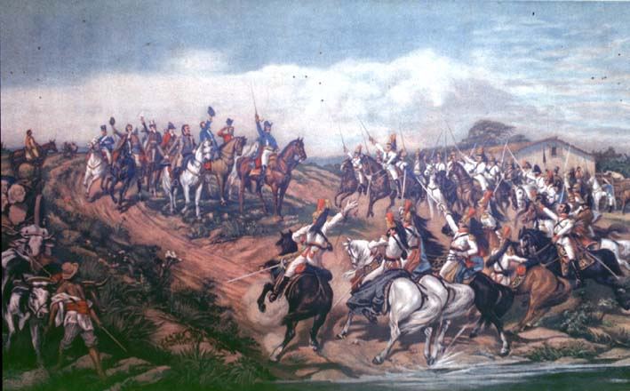

|
|  |
|
Pedro Américo de Figueiredo e Melo, Independência ou Morte, 7 de Setembro, 1822
|
Until 1889, the Brazilian equivalent to Argentine and Chilean commemorations of their anti-colonial, republican revolutions, was September 7th, 1822, the day on which Emperor D. Pedro I had supposedly exclaimed his 'Cry of Ypiranga' –"Independence or Death!"–, named after a small river in the vicinity of São Paulo. D. Pedro, who had stayed behind as regent after the return of his father D. João VI to Portugal the previous year, had reportedly been much enraged by paternal correspondence ordering his immediate return to Lisbon, accusing his Brazilian ministers of treason, and de-authorising all decrees that disobeyed the Portuguese Constitutional Assembly´s attempts to re-centralise power in the Portuguese motherland. Pedro Américo de Figueiredo e Melo´s commemorative painting of the event, revealed in April 1888 at the Academy of Fine Arts, Florence, where the painter held a government-sponsored fellowship, and in the presence of not only the Emperor of Brazil and son of Pedro I, D. Pedro II, but also the Queens of Britain and Serbia, allegorises the event of independence in a similar fashion as Ballerini´s painting of San Martín: once again the Emperor, surrounded by yet also slightly set apart from his counsellors and officers, addresses a 'nation' embodied in a cavalry regiment barely able to contain the passionate agitation of men and horses. Yet in addition there are also 'spectators' on this picture: 'typical countrymen' symbolising not just 'the people' but also emblematically pointing to a 'national economy' that exploits the national wealth. The scene of politics (the 'birth of the nation-state') is framed here by emblems of economy and labour: a workman with his oxen pulling a cart of trunks, a (black) donkey driver heading for the market, a plantation house. The painter´s intention seems to have been to show the 'embeddedness' or organic connection between the political process and local reality; however, the overall impression is rather one of 'out-of-place'-ness, or incongruency: a Napoleonian, Prussian, or Victorian war scene pasted into a costumbristic rural landscape.
|